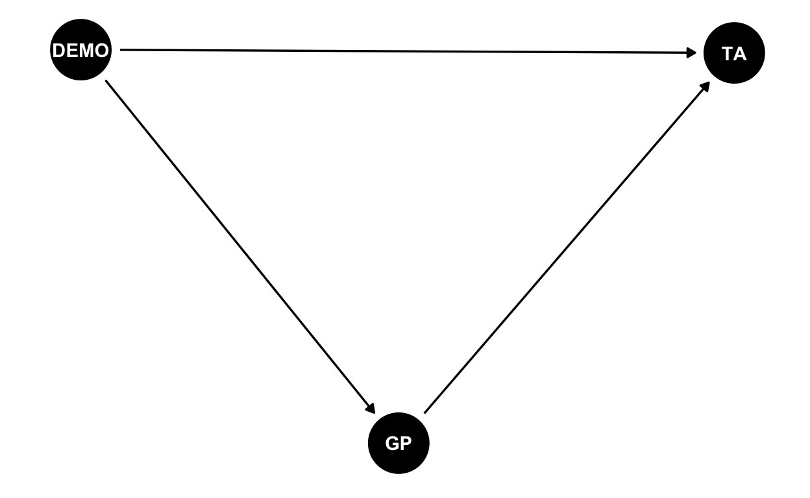

Where to find this research

QR code for this presentation
Presentation website: https://bit.ly/2024apsaprivacy
Why this project?
![CCTV cameras near Tiananmen Square^[Image credit: https://www.cnbc.com/2020/02/25/coronavirus-china-to-boost-mass-surveillance-machine-experts-say.html]](www/chinasurveillance.jpeg)
CCTV cameras near Tiananmen Square1
What are the goals of this project?
- What are the determinants of how Chinese feel about government monitoring?
- Not obvious!
- How did Covid change things?
- Also not obvious!
Covid-era health code2
What determines acceptance of government monitoring? - literature review
Demographics matter
Trust in government
US Covid-19 protests
Chinese trust in government
![Measure of trust in Chinese government^[Image credit: Wu et. al. https://doi.org/10.1080/10670564.2021.1893558]](www/trust.jpeg)
Measure of trust in Chinese government3
Image credit: Wu et. al. https://doi.org/10.1080/10670564.2021.1893558↩︎
Covid was a possible game changer
![White paper protestors in Beijing^[Image credit: https://www.upi.com/Top_News/World-News/2022/11/28/Xi-Jinping-protests-Beijing-Shanghai-white-paper-lockdowns-COVID-19/8941669623371/]](www/whitepaper.jpeg)
White paper protestors in Beijing4
Project theory and data
Hypotheses
- \(\mathbf{H1}: Demographics \rightarrow
variation\:in\:government\:tracking\:acceptance\)
- Reason: Individual features matter
- Reason: Individual features matter
- \(\mathbf{H2}: Goverment\:trust
\rightarrow acceptance\:of\:government\:tracking\)
- Reason: Generalized trust flows to specific issue
trust
- Reason: Generalized trust flows to specific issue
trust
- \(\mathbf{H3}:
Covid\:experience\rightarrow
variation\:in\:government\:tracking\:acceptance\)
- Reason: Traumatic Covid-19 experience
- Reason: Traumatic Covid-19 experience
- \(\mathbf{H4}:
Determinants\:of\:government\:tracking\:acceptance\neq
determinants\:of\:private\:tracking\:acceptance\)
- Reason: Government trust not relevant, other
factors
- Reason: Government trust not relevant, other
factors
Theoretical models

![Wuhan before and after the lockdown^[Image credits: https://www.japantimes.co.jp/news/2020/04/06/asia-pacific/china-wuhan-lockdown-coronavirus/, https://mixmag.net/read/thousands-music-festival-wuhan-water-park-news]](www/wuhanlockdown.jpeg)
![Wuhan before and after the lockdown^[Image credits: https://www.japantimes.co.jp/news/2020/04/06/asia-pacific/china-wuhan-lockdown-coronavirus/, https://mixmag.net/read/thousands-music-festival-wuhan-water-park-news]](www/wuhanparty.jpeg)
![Shanghai mass Covid testing^[Image credit: https://www.bbc.com/news/world-asia-china-61307148]](www/shanghailockdown.jpeg)
Key results
Structural equation
Estimated model

Results
| (1) | |
|---|---|
| DEMO to GP | — |
| (0.005) | |
| GP to TA | ▲*** |
| (0.015) | |
| DEMO to TA | ▼* |
| (0.005) | |
| COVID to TA | ▲*** |
| (0.006) | |
| COVID to GP | ▼*** |
| (0.007) | |
| DEMO to GP to TA | — |
| (0.002) | |
| COVID to GP to TA | ▼*** |
| (0.000) | |
| Num.Obs. | 3507 |
| AIC | 52129.6 |
| BIC | 52246.7 |
| + p < 0.1, * p < 0.05, ** p < 0.01, *** p < 0.001 | |
| Demographic factor variable loadings omitted | |
| ▲, ▼ indicates p>0.05 | |
Interpretation
Public vs. private monitoring
Implications and concluding thoughts
Hypotheses revisited
- \(\mathbf{H1}: Demographics \rightarrow
variation\:in\:government\:tracking\:acceptance\)
- Reason: Individual features matter
- Result:

- Evidence: Not presented here
- \(\mathbf{H2}: Goverment\:trust
\rightarrow acceptance\:of\:government\:tracking\)
- Reason: Generalized trust flows to specific issue trust
- Result:

- Evidence: Both direct and indirect effects indicate that trust matters
- \(\mathbf{H3}:
Covid\:experience\rightarrow
variation\:in\:government\:tracking\:acceptance\)
- Reason: Traumatic Covid-19 experience
- Result:
- Evidence: Indirect effect lowers acceptance, direct effect increases acceptance
- \(\mathbf{H4}:
Determinants\:of\:government\:tracking\:acceptance\neq
determinants\:of\:private\:tracking\:acceptance\)
- Reason: Government trust not relevant, other factors
- Result:
- Evidence: Regression results across three different sets of predictors show significant differences
Final thoughts
- Demographics don’t seem to matter much
- Trust is important, but what causes trust? Demographics do not seem to offer any clues
- Covid-19 had a bifurcated impact, both positive and negative on
acceptance of monitoring
- Positive maybe because respondents accepted the necessity of monitoring
- Negative because of the impact on government trust
- Private monitoring has different determinants than government monitoring
- Others?? Help me out!
QR code for this presentation